Republikken er et arbejdsfællesskab, der bygger på det sociale fundament som de med årene har opbygget. Republikkens sociale netværk er et af konceptets grundsøjler, da det giver rig mulighed for networking, samt et trygt arbejdsmiljø. Det kan dog være svært at gennemskue dette, da alt foregår på mund-til-mund basis. 39,47% har udtrykt et ønske om højere serviceniveau eller bedre forhold for sociale events og aktiviteter. Republikken har derfor behov for en app der kan samle alle medlemmer, og give dem mulighed for at henvende sig til ét enkelt sted, hvor de enten vil modtage eller tilbyde den hjælp de allerede efterspørger.
Den egentlige fordel ved ReConnect er, at den samler og strukturere det koncept som er drivkraften hos Republikken i forvejen. Republikken har ikke behov for at udvide deres koncept, men nærmere at gøre det mere tilgængeligt for medlemmer at tage brug af den service de tilbyder indbyrdes. Det vil gøre det mere attraktivt for nye medlemmer at benytte sig af hinanden, samt skabe tryggere arbejdsforhold, da ReConnect vil fungere som et digitalt samlingspunkt for fællesskabet.
Prøv appen nedenunder